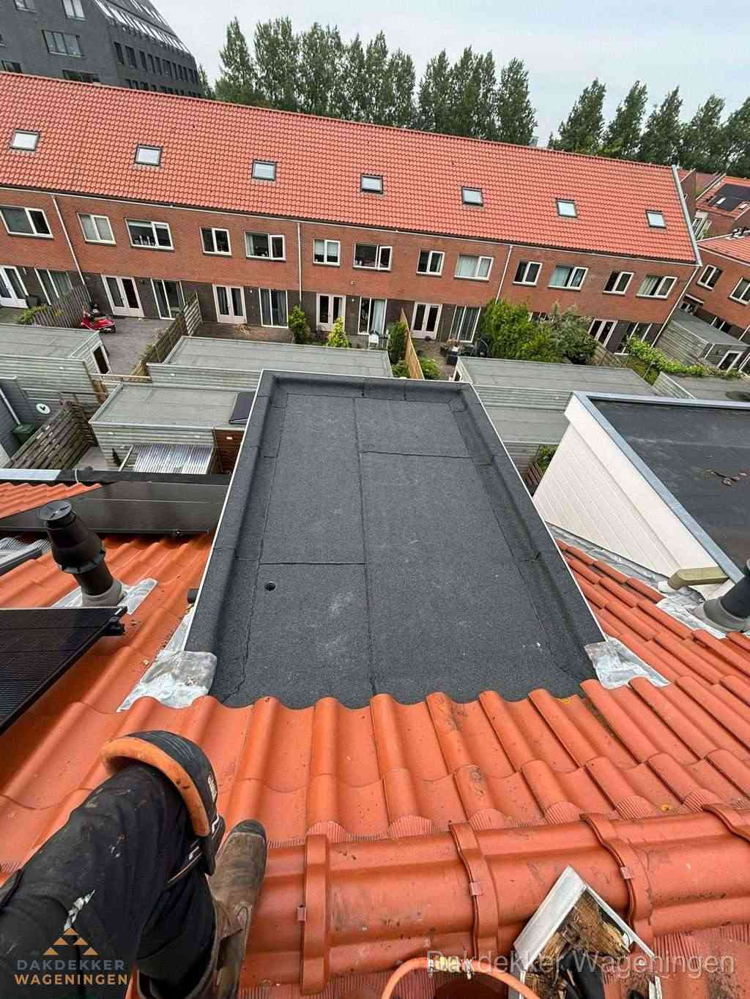

Plat dak
EPDM of bitumen (APP en SBS), op woningen, dakkapellen, garages en uitbouwen. Wij halen de oude laag eraf en leveren het dak netjes en waterdicht op.
- Lekkage opsporen en verhelpen
- Nieuwe dakbedekking
- Dakisolatie tot minimaal Rc 3,5
- Dakdoorvoeren en lichtkoepels